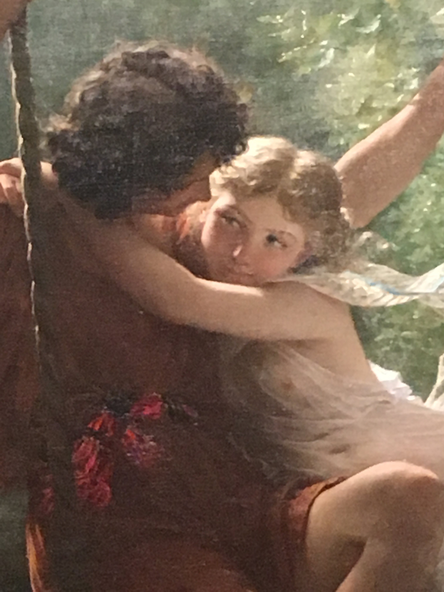
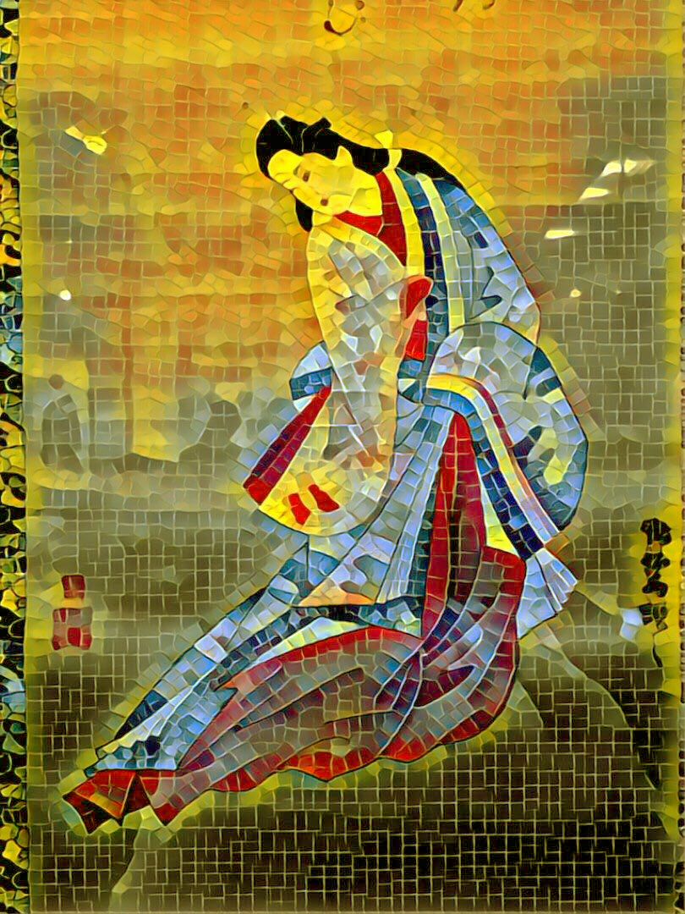
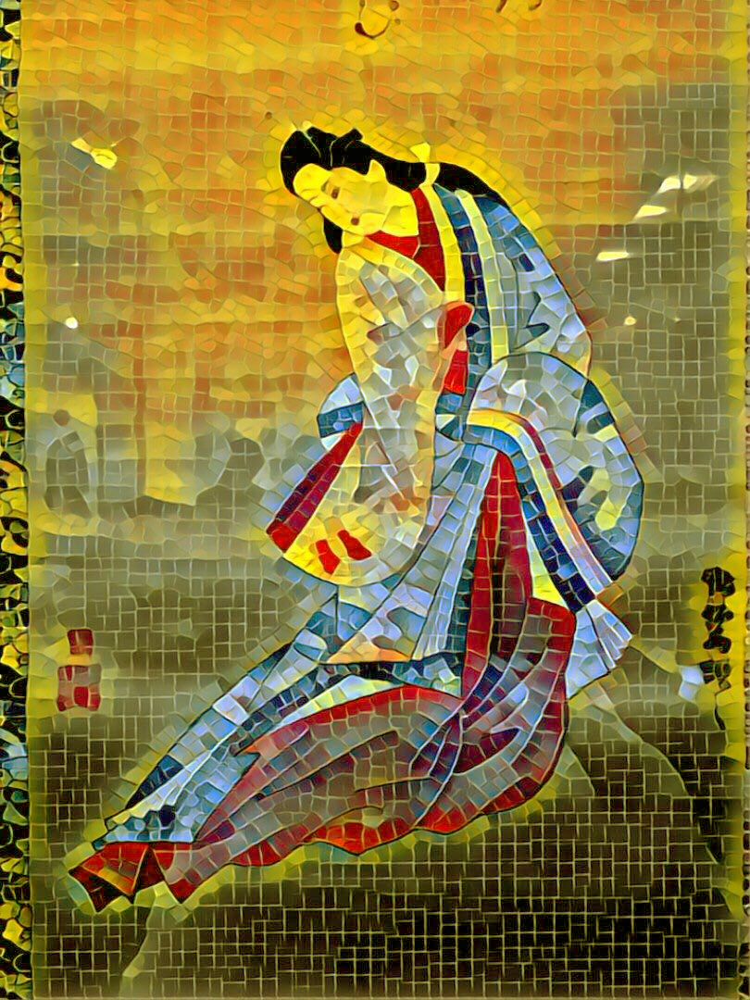
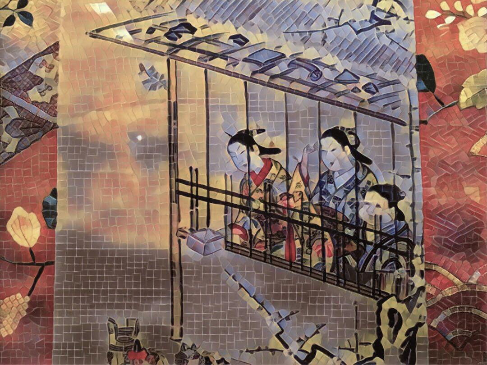
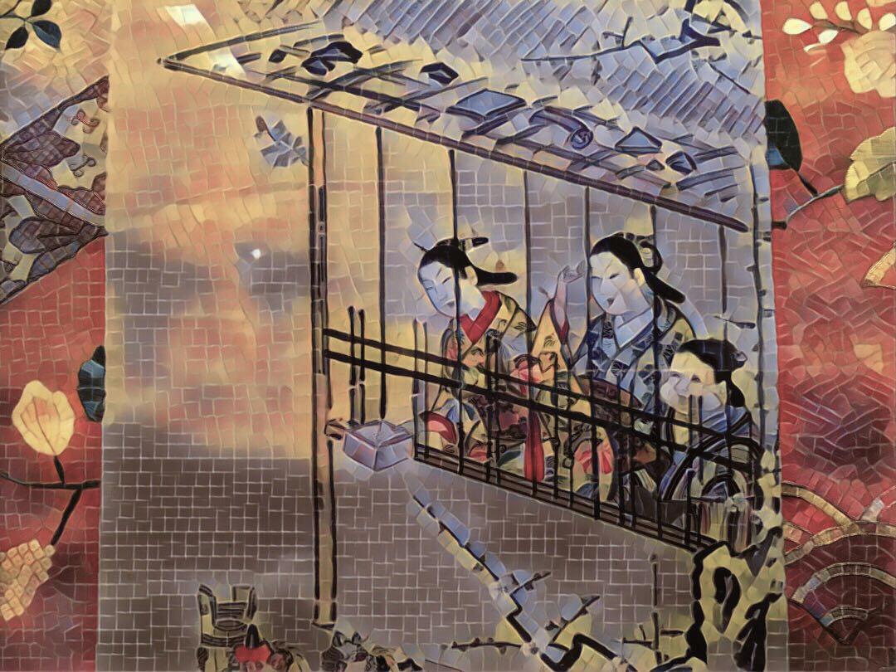
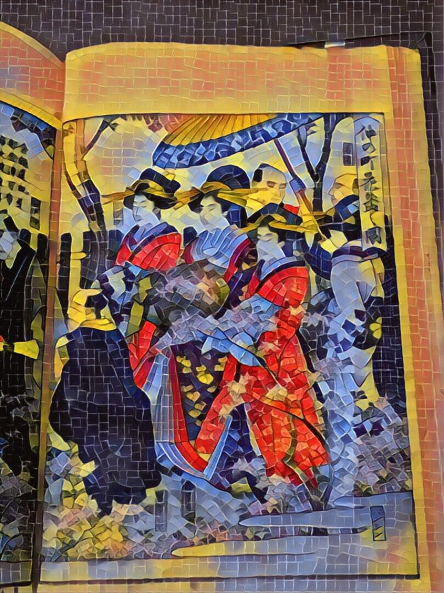
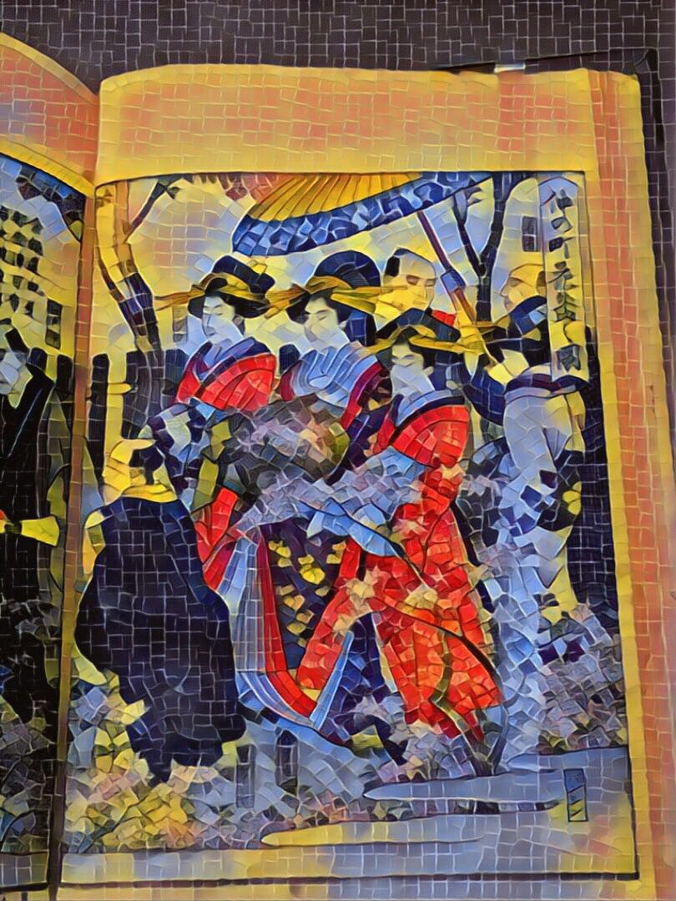

Guido Reni (Italian, Bologna 1575–1642 Bologna), il on canvas, Metropolitan Museum of Art, New York.

 

 

The Japanese Ladies - Unknown, Metropolitan Museum of Art, New York.
 

The Japanese Ladies - Unknown, Metropolitan Museum of Art, New York.


The Japanese Lady - Unknown, Metropolitan Museum of Art, New York.